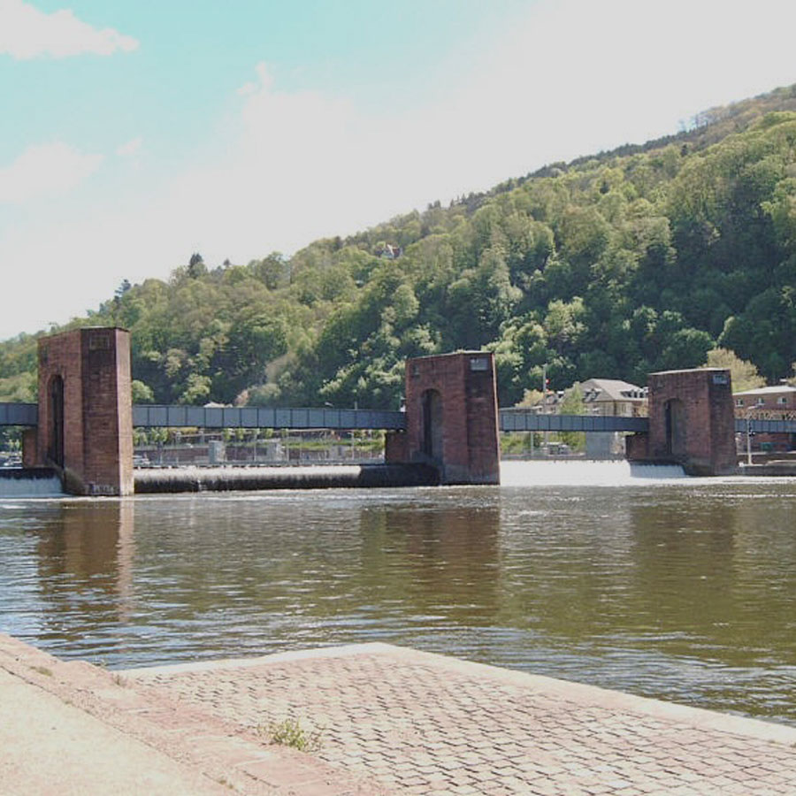
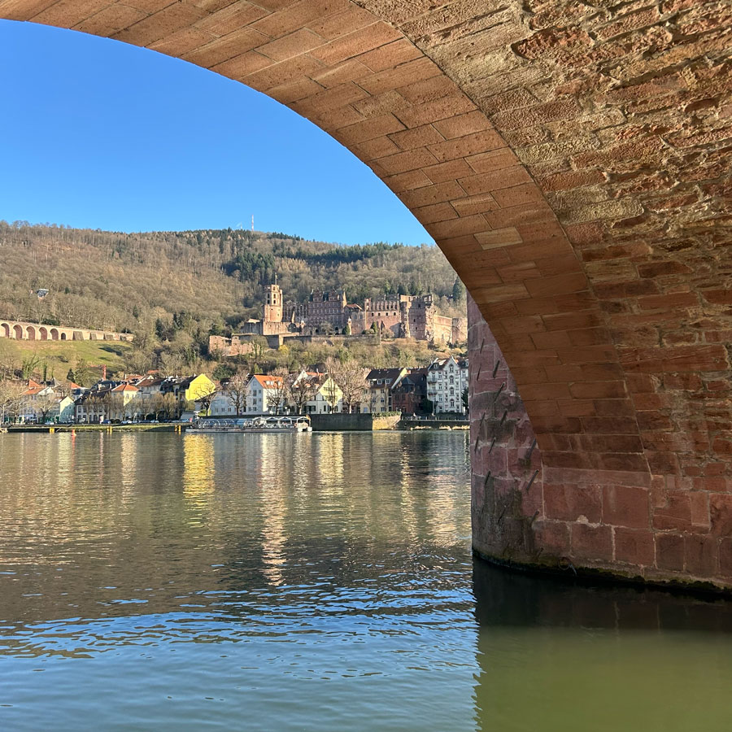
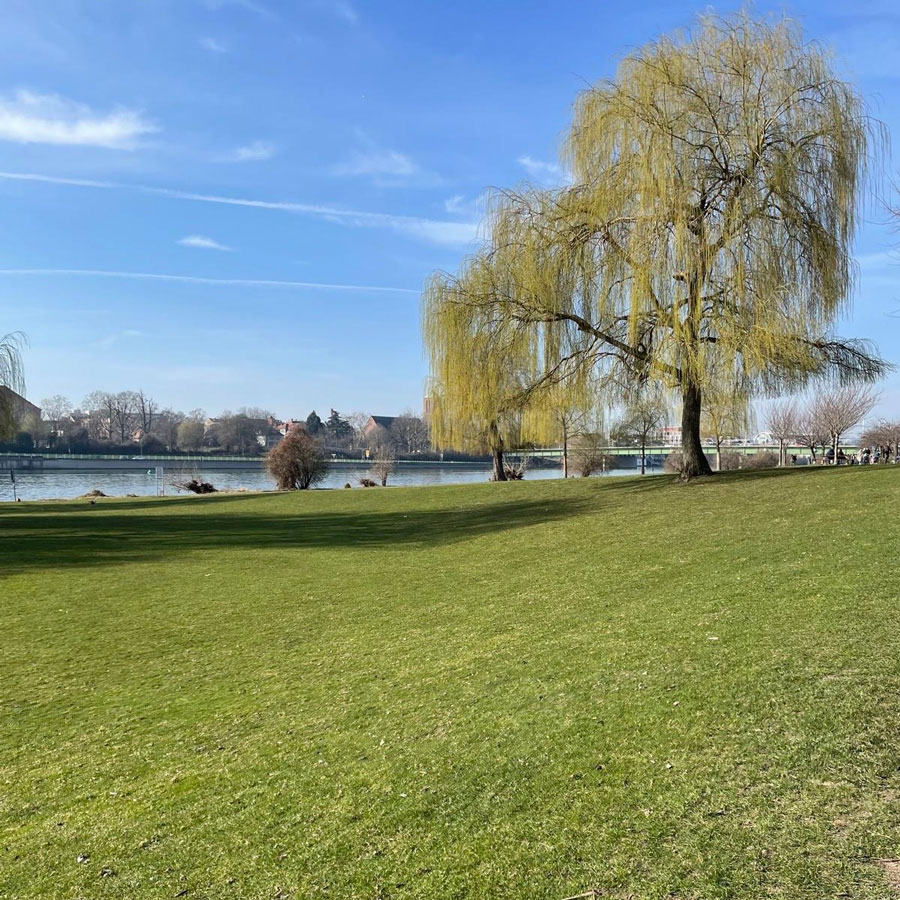
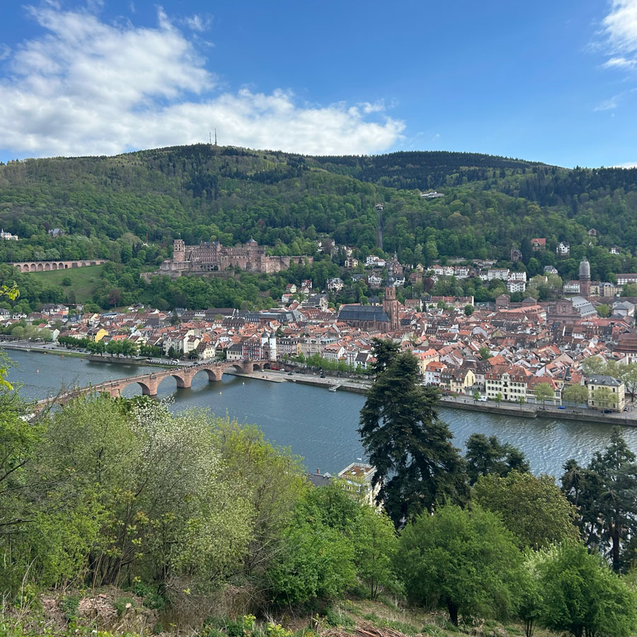
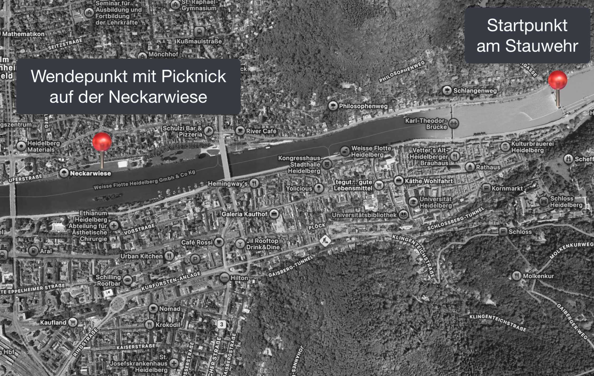

Kanutour auf dem Neckar
Erleben Sie Heidelberg aus einer neuen Perspektive:
Auf dieser geführten Kanutour gleiten Sie gemeinsam über den Neckar und entdecken Stadt und Natur vom Wasser aus.
Etappen:
- Einstieg am Stauwehr beim Karlstor
- Neckarfahrt flussaufwärts mit Blick auf Schloss & Philosophenweg
- Zwischenstopp an der Neckarwiese
- Rückfahrt mit Geschichten zur Stadt vom Wasser aus

Startpunkt:
Stauwehr Heidelberg
Stauwehr Heidelberg

Blick auf Heidelbergs schönste Ecken

Zwischenstopp mit Picknick auf der Neckarwiese

Heidelbergs Geschichte vom Wasser aus
Verfügbare Termine:
April – Oktober: (ausschließlich bei gutem Wetter)- Fr & Sa: 14:00 Uhr
- So: 11:00 Uhr
Gruppenbuchungen sind ab 6 Personen täglich möglich.
Tour-Guide:
Sabine Deutz mit Nico Münster
Dauer & Preis:
2,5 Std | 29 € pro Person (inkl. Leihausrüstung)
Zu beachten:
- Schwimmkenntnisse erforderlich
- Wechselkleidung empfohlen
- Für Kinder ab 10 J. (nur in Begleitung)
Startpunkt | Strecke | Karte
Kartenausschnitt Heidelberg